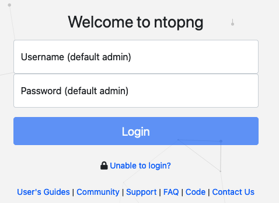

User Interface Guide
After ntopng has started you can view the GUI. By default, the GUI can be accessed from any web browser at http://<ntopng IP>:3000/. A different port can be specified as a command line option during ntopng startup. The first page that always pops out contains the login form - provided that the user has not decided to turn authentication off during startup.

The Login Page
The default login is
username |
admin |
password |
admin |
During the first access, a page asks to change the default password: type the new password twice (from 5 to 128 characters, different from admin) and, if you want, choose the language of the interface. Until the password is changed every other page leads back here; after the change you go to the page you asked for. Logout leaves without changing it.
Administrator privileges are granted to user admin. If an unauthenticated user attempts to access a specific ntopng URL, the system will redirect the browser to the login page and then, upon successful authentication, to the requested resource. Ntopng GUI web pages have a common structure the user will soon be familiar with. The pages are mostly composed of an always-on-top status bar and some body content.

The Header Bar
The header bar show the ntopng status information, in particular:
The currently selected interface.
The interface Up/Down throughput chart.
A series of coloured badges.
The Search button (or Ctrl+F), which finds pages, preferences, hosts and more (see Search).
The notifications bell and the user administration menu.
The coloured indicate the status of many components in ntopng. The badges in the above picture have the following meaning (from left to right):
Yellow triangle with the Engaged alerts count.
Yellow triangle with the Warning Alerted Flows count.
Red triangle with the Error Alerted Flows count.
Green badge with the number of active local hosts.
Gray badge with the number of active remote hosts.
Gray badge with the number of active devices.
Gray badge with the number of active flows.
Red badges are often symptoms of problems. For example, if the active hosts ore flows badges are red it means that the ntopng hash tables are full and some statistics can be lost (here can be found more information on this topic).
A menu bar is always available on the left to navigate across ntopng pages. Entries in the menu bar change depending on the currently selected interface. The System Interface has menu entries which are different from the other interfaces. Each individual menu bar entry will be discussed below.
The Interfaces dropdown menu entry in the top toolbar contains lists all the interfaces that are currently monitored by ntopng. Among all interfaces listed, one has a check mark that indicates the interface is currently selected. A special interface is always present in ntopng, the System Interface. Most of the data and information shown in ntopng web GUI is related to the currently selected interface. Any interface listed can be selected simply by clicking on its name.

The Interfaces Dropdown Menu
The dropdown menu is only used to switch between selected interfaces, it is also used to actually see interface traffic statistics.
When two or more interfaces are monitored, the dropdown also lists the Overview entry, which combines the data of all the local interfaces in a single view.